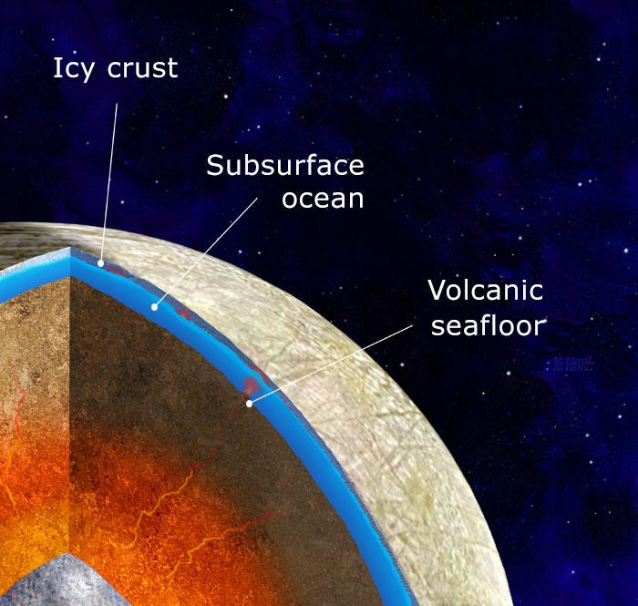

Europa is unique for many reasons, partially because it is Jupiter’s pride and joy—its best-looking moon. But that’s not why astronomers are so captivated; they see it as one of the most Earth-like bodies in the solar system. It might be thought that, because it is about 485 million miles from the Sun, it’s a cold wasteland—and that might be true from the outside—but its surface guards one of the most life-like worlds in the solar system.
When Voyager One swooshed by Europa on March 5, 1979, it took a photo and returned it to us on Earth. One thing immediately stood out to scientists—Europa doesn’t have any craters, instead, it has cracks. Look at almost every other moon in the solar system; they all have craters, even our own. These craters are a side effect of being hit by space debris for billions of years, yet Europa doesn’t have a single one… why? The chance that it hasn’t been hit a single time is so incredibly small that it shouldn’t even be brought up, so what gives? Where are all these craters going? How are they disappearing? Something must be happening that causes these scars to be erased.
Jupiter has a magnetic field, but not just any ordinary one—it’s tilted. This tilt causes the magnetic field to sway. This swaying motion creates an incredibly strong magnetic field on Europa. But why does this happen? Just because Jupiter's magnetic field sways as it rotates doesn’t mean Europa must have one as well. Europa must have an electrically conductive layer inside itself that reacts with Jupiter's field.
When the Galileo satellite passed by Jupiter, it determined that this conductive layer must be incredibly close to the crust. But what is it? Well, scientists found red spots on Europa’s surface and, after further investigation, determined that it most likely is sea salt. After this conclusion, scientists suspect that there could be a saltwater ocean more than 50 miles deep beneath Europa’s crust. This ocean must be causing the crust above to shift, crack, and erase the craters just like the tectonic plates on Earth.
Well, it’s tough to say, but it might actually be possible. Europa isn’t the only moon that orbits Jupiter; the moon Io is one orbit closer to Jupiter, while Ganymede is one orbit farther. Europa’s orbit is just close enough to these moons that, when it gets close to one, its orbit is shifted toward that moon. This causes Europa’s orbit to be more eccentric, making Jupiter's pull stronger on one side of the orbit than the other. This phenomenon stretches and squeezes Europa like a stress ball.
This constant expansion and compression generate heat that keeps Europa’s oceans liquid. Without this process, its ocean would be frozen due to the sheer distance from the Sun. Due to this flexing, the magma from the moon's core is pushed up, causing water near the surface of the ocean floor to warm up and expel minerals, which would allow life to thrive. This occurrence happens on Earth as well and supports life deep in the ocean.
Life doesn’t just pop out of nowhere; it takes long periods of time before the simplest forms of life, single-cell organisms, start appearing. So even if the conditions for life are met, we still might not find any forms of living organisms. I mean, think about it—the birth of life has only occurred once on our planet, and it branched off into all sorts of species. But this birth has never been repeated. So, by all means, life is not guaranteed.
Europa isn’t just exciting to you and me—even NASA wants to learn more. The Europa Clipper, a spacecraft launched by NASA to study the moon in detail, will try to confirm the existence of Europa’s subsurface ocean by flying by it multiple times, using radar to scan beneath the ice and analyze the moon’s chemistry. Scientists hope to confirm the presence of an ocean and identify organic compounds that could point to life.
There won’t be any surface landers put on the surface with this mission, but if an ocean is confirmed, NASA will highly consider it. Now, we aren’t expecting to find a highly civilized species with skyscrapers and government structures—there’s a chance there won’t even be multicellular organisms. Scientists are just hoping to eventually find any type of life, most likely single-celled organisms. But who knows? The Europa Clipper might get to Jupiter’s moon and be forced to go through customs to enter Europa Metropolis. We might be the ones lagging behind. As always, we’ll have to wait and see. In the meantime, let's just hope there's something to be discovered.